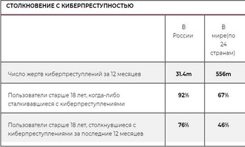
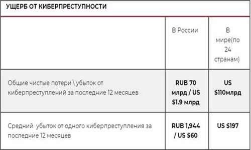
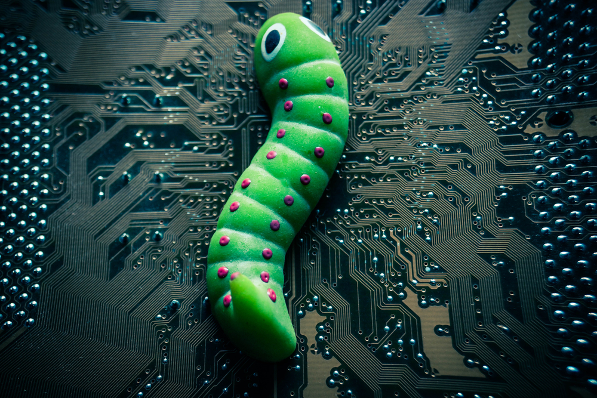

I. Вступление.
Использование компьютеров и интернета привело к непрерывной передаче данных с разных частей света. Люди прибегли к использованию интернета, как способу хранения, передачи и систематизации информации из-за следующих аспектов:доступность, целостность, конфиденциальность. Современная информационная система представляет собой сложную структуру, которая состоит из огромного числа компонентов различной степени автономности. Они связаны между собой и обмениваются данными. Практически любой из этих компонентов может подвергнуться внешнему воздействию или выйти из строя.
Компоненты автоматизированной информационной системы можно разбить на следующие группы:
⚫ программное обеспечение;
⚫ панные хранимые на магнитных носителях(Винчестеры, дискеты, флешки, и т.д.);
⚫ персонал работающий с компьютерами;
⚫ аппаратура (компьютеры, сервера, процессоры, мониторы, и т.д.).
II. Данные об ущербе от кибератак.
 Согласно результатам исследования, каждую секунду 18 пользователей старше восемнадцати лет становятся жертвами киберпреступности, ежедневно это более полутора миллионов жертв киберпреступности в мире. Средний ущерб от кибератаки на одного среднестатистического пользователя составляет $197. За 2012 год примерно 556 миллионов пользователей старше 18 лет во всем мире пострадали от киберпреступности. В исследовании приняло участие более 13 тысяч человек из 24 стран. В этом году впервые в исследовании приняли участие российские пользователи. Цель исследования - определить общую осведомленность пользователей о киберугрозах в сети, наиболее популярные типы кибератак, а также влияние новых технологий на информационную безопасность пользователей.
III. История вирусов.
Термин вирус появился аж в 1945 году - Вице-адмирал ВМФ США Грейс Муррей Хоппер, руководившая информационным отделом военно-морского штаба, столкнулась с тем, что электронно-счетные машины (прототипы современных компьютеров) начали давать сбой. Причиной стал мотылек, случайно залетевший внутрь одного из реле. Адмирал назвала эту проблему жуком (bug), используя термин, физиков США и Великобритании с конца XIX века (он обозначал любого рода неполадку в электрических устройствах). Первым действующим вирусом можно назвать игру Darwin, которую изобрели в 1961 году сотрудники компании Bell Telephone Laboratories. Программы, написанные на ассемблере (тогда языков высокого уровня еще не было) и называемые «организмами», загружались в оперативную память компьютера и сражались за ресурсы. Они захватывали "жизненное" пространство, пытаясь уничтожить противника.
IV. Типы вирусов.
1. Троянская программа (Троян, Троянский конь) -
- эта программа полностью оправдывает свое название. Она проникает в другие программы и скрывается там до момента, когда программа-хозяин будет запущена. До запуска хозяйской программы вирус не может нанести вред. Чаще всего троянский конь используется для удаления, изменения или кражи данных. Самостоятельно размножатся троян не может.
2. Программы шпионы -
- эти Штирлицы занимаются сбором информации о пользователе и его действиях. Чаще всего они воруют конфиденциальную информацию: пароли, адреса, номера карт/счетов и т. д.
3. Загрузочные вирусы -
- поражают загрузочный сектор винчестера (жесткого диска). Их целью является существенное замедление процесса загрузки операционной системы.
4. Программный вирус -
- программа, которая прикрепляется к другим программам и нарушает их работу. В отличии от трояна компьютерный вирус может размножаться.
5. Эксплойт -
- это специальные программы, которые используются злоумышленниками для проникновения в операционную систему через ее уязвимые, незащищенные места.

V. Сетевые черви.
Сетевой червь -
— разновидность вредоносной программы, самостоятельно распространяющейся через локальные и глобальные (Интернет) компьютерные сети.VI. Червь Морриса.
«Червь Морриса»
был первым в истории развития вычислительной техники образцом вредоносного программного обеспечения, который использовал механизмы автоматического распространения по сети. Для этого использовалось несколько уязвимостей сетевых сервисов, а так же некоторые слабые места компьютерных систем, обусловленные недостаточным вниманием к вопросам безопасности в то время.По словам Роберта Морриса, червь был создан в исследовательских целях. Его код не содержал в себе никакой «полезной» нагрузки (деструктивных функций). Тем не менее, из-за допущенных ошибок в алгоритмах работы, распространение червя спровоцировало так называемый «отказ в обслуживании», когда ЭВМ были заняты выполнением многочисленных копий червя и переставали реагировать на команды операторов.
VII. Типы заражения червей.
Червь мессенджера -
- Он распространяется в популярных программах, созданных для общения, таких как ICQ или Skype. Контакт-листы получают сообщение, содержащее ссылку на файл с копией червя, который активируется после загрузки и запуска зараженного файла.
Почтовый червь -
- Проникает на компьютер посредством почтовой рассылки. Обычно это письмо, содержащее ссылку на файл или сам зараженный файл.
Червь чата -
- Для распространения он использует интернет-чаты – системы для общения между собой в реальном времени. Такой червь публикует в чате ссылку на файл со своей копией, либо же сам файл.
Червь файлообменника -
- Для внедрения в файлообменную сеть, червь должен скопировать себя в каталог файлов на компьютере пользователя.
Другие черви -
- Сюда можно отнести вредоносное ПО, которое способно распространяться через сетевые ресурсы.
VIII. История антивирусов.
Первый антивирус в современном понимании этого термина, то есть резидентный, «защищающий» от вирусных атак, появился в 1985 году. Программа DRPROTECT создана усилиями Джи Вонг (Gee Wong). Разработка блокировала все операции (запись, форматирование), выполняемые через BIOS. В случае выявления такой операции программа требовала рестарта системы.
Антивирусные программы до начала 90-х годов представляли собой, по сути, набор из нескольких десятков сигнатур (образцов вирусного кода), которые хранились в теле программы. Предполагалась также процедура поиска этих сигнатур в файлах. Причем зачастую эти сигнатуры разработчики даже не шифровали. Получалось так, что порой один антивирус легко мог «найти вирус» в другом. Усложнение ситуации с вирусами повлекло за собой и усложнение программ, которые были призваны бороться с ними. Как это обычно бывает, совсем скоро инициатива по разработке и впоследствии продаже антивирусных программ перешла к большим компаниям, состоящим, естественно, более чем из одного программиста-энтузиаста. С гордостью стоит отметить, что в развитии этой индустрии одну из ведущих ролей сыграли программисты из России.
IX. Классификация антивирусных программ.
Антивирусные программы разделяются по признаку размещения в оперативной памяти:
⚫ резидентные (начинают свою работу при запуске операционной системы, постоянно находятся в памяти компьютера и осуществляют автоматическую проверку файлов);
⚫ нерезидентные (запускаются по требованию пользователя или в соответствии с заданным для них расписанием).
По виду (способу) защиты от вирусов различают:
⚫ программы-детекторы, находят вирусы в оперативной памяти, на внутренних и(или) внешних носителях, выводя сообщение при обнаружении вируса.
⚫ программы-доктора, (находят зараженные файлы и «лечат» их. Среди этого вида программ существуют полифаги, которые способны удалять разнообразные виды вирусов, самые известные из антивирусов-полифагов Norton AntiVirus, Doctor Web, Kaspersky Antivirus.
⚫ программы-вакцины выполняют иммунизацию системы (файлов, каталогов) блокируя действие вирусов.
⚫ программы-мониторы начинают свою работу при запуске операционной системы, постоянно находятся в памяти компьютера и осуществляют автоматическую проверку файлов по принципу «здесь и сейчас».
X. Заключение.
Информация -
- это ресурс. Потеря конфиденциальной информации приносит моральный или материальный ущерб. Условия, способствующие неправомерному овладению конфиденциальной информацией, сводятся к ее разглашению, утечке и несанкционированному доступу к ее источникам. В современных условиях безопасность информационных ресурсов может быть обеспечена только комплексной системной защиты информации.
Комплексная система защиты информации должна быть: непрерывной, плановой, целенаправленной, конкретной, активной, надежной и др. Система защиты информации должна опираться на систему видов собственного обеспечения, способного реализовать ее функционирование не только в повседневных условиях, но и критических ситуациях.
Многообразие условий, способствующих неправомерному овладению конфиденциальной информацией, вызывает необходимость использования не менее многообразных способов, сил и средств для обеспечения информационной безопасности,
Способы обеспечения информационной безопасности должны быть ориентированы на упреждающий характер действий, направляемых на заблаговременные меры предупреждения возможных угроз коммерческим секретам.
Обеспечение информационной безопасности достигается организационными, организационно-техническими и техническими мероприятиями, каждое из которых обеспечивается специфическими силами, средствами и мерами, обладающими соответствующими характеристиками.
Список литературы.